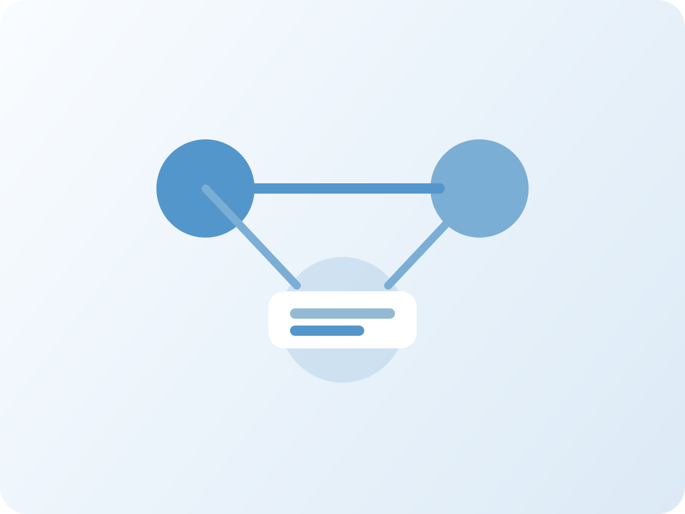

Logo de marca
Versión limpia para usar en navegación, pie de página y piezas institucionales.
Medellín · Marketing y desarrollo digital
Pulse Digital acompaña a las empresas con asesoría estratégica, atención al cliente y experiencias digitales que fortalecen la relación con su audiencia.
Traducimos el propósito de la empresa en una presencia digital coherente, útil y pensada para conectar mejor con clientes y audiencias.
Identidad visual
Estas piezas visuales son una base inicial. De momento, sigo recabando informacion en base al plan.
Versión limpia para usar en navegación, pie de página y piezas institucionales.
Visual pensado para acompañar el mensaje de asesoría, cercanía y acompañamiento.

Imagen de apoyo para secciones sobre estrategia, interacción y experiencia de marca.
Sobre nosotros
Pulse Digital es una empresa de marketing y desarrollo digital enfocada en conectar marcas con sus audiencias mediante soluciones coherentes con la identidad de cada negocio.
Un aliado estratégico para empresas que buscan fortalecer su presencia digital y comunicar con más claridad.
Acompañamos procesos de marca, atención y experiencia digital para generar valor real en el negocio.
Trabajamos con innovación, cercanía y profesionalismo para construir relaciones de largo plazo.
Acompañar a las empresas en su desarrollo digital mediante asesoría estratégica, atención cercana y experiencias que conecten marcas con sus audiencias de manera efectiva.
Ser un aliado digital de referencia para marcas que buscan crecer con coherencia, innovación y un servicio orientado a relaciones de largo plazo.
Servicios
Cada servicio está orientado a fortalecer la estrategia, la atención y la experiencia que vive el cliente con la marca.
Orientación para tomar decisiones digitales más claras, priorizar acciones y alinear objetivos con oportunidades reales.
Impacta en la claridad, el orden y la dirección del negocio.
Acompañamiento empático, rápido y profesional para cuidar cada punto de contacto con la audiencia.
Refuerza la confianza y mejora la percepción de marca.
Soluciones que hacen más clara, útil y consistente la interacción entre la marca y sus usuarios.
Favorece la conexión, el posicionamiento y la usabilidad.
Metodología
Un proceso simple, ordenado y centrado en el cliente para asegurar claridad y mejora continua.
Comprendemos el contexto, los objetivos y las necesidades de la marca.
Revisamos oportunidades, prioridades y puntos de mejora.
Desarrollamos acciones alineadas con la estrategia y la experiencia esperada.
Ajustamos la propuesta con base en resultados y aprendizaje continuo.
Cultura y filosofía
La cultura interna de Pulse Digital se construye desde la responsabilidad, el orden, la empatía y la calidad en cada interacción.
Ventajas competitivas
Público objetivo
Nos dirigimos a organizaciones que buscan fortalecer su presencia digital, ordenar su comunicación y mejorar la forma en que se relacionan con su audiencia.
FAQ
Resolvemos las dudas más comunes para facilitar el primer contacto.
Contacto
Si tu marca necesita una presencia digital más clara, estratégica y alineada con su propósito, Pulse Digital puede acompañarte.
Conectamos marcas con su audiencia mediante innovación, cercanía y profesionalismo.